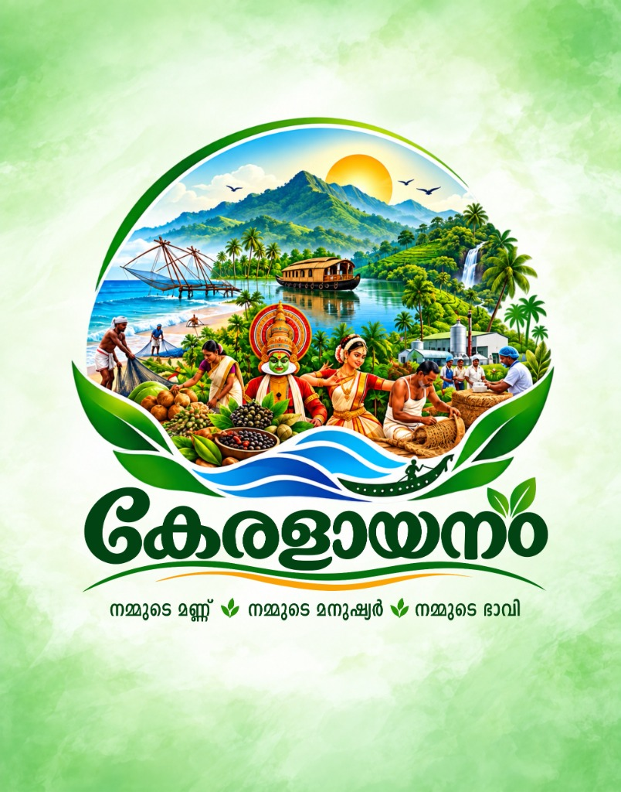
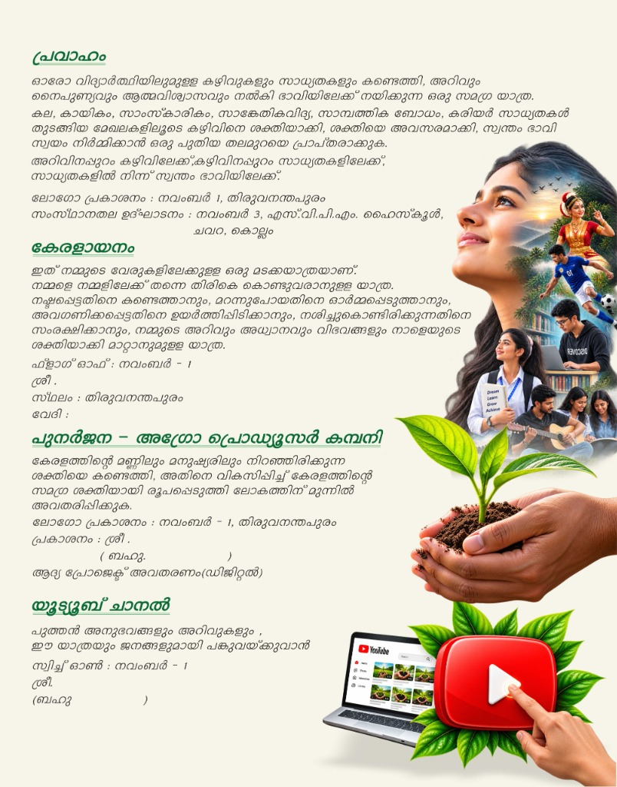

ഇത് നമ്മുടെ വേരുകളിലേക്കുള്ള ഒരു മടക്കയാത്രയാണ്. നമ്മളെ നമ്മളിലേക്ക് തന്നെ തിരികെ കൊണ്ടുവരാനുള്ള യാത്ര. നഷ്ടപ്പെട്ടതിനെ കണ്ടെത്താനും, മറന്നുപോയതിനെ ഓർമ്മപ്പെടുത്താനും, അവഗണിക്കപ്പെട്ടതിനെ ഉയർത്തിപ്പിടിക്കാനും, നശിച്ചുകൊണ്ടിരിക്കുന്നതിനെ സംരക്ഷിക്കാനും, നമ്മുടെ അറിവും അധ്വാനവും വിഭവങ്ങളും നാളെയുടെ ശക്തിയാക്കി മാറ്റാനുമുള്ള യാത്ര.
മണ്ണിന്റെ മൂല്യവും മനുഷ്യരുടെ നന്മയും തിരിച്ചറിഞ്ഞ്, അറിവും അധ്വാനവും സ്നേഹവും ചേർത്തുപിടിച്ച് സാംസ്കാരികമായി സമ്പന്നവും സാമ്പത്തികമായി ശക്തവും പ്രകൃതിയോട് ഉത്തരവാദിത്തമുള്ളതുമായ “ഒരു പുതിയ കേരളം (A New Kerala)” സൃഷ്ടിക്കുകയാണ് ഈ യാത്രയുടെ ലക്ഷ്യം.

ഓരോ വിദ്യാർത്ഥിയിലുമുള്ള കഴിവുകളും സാധ്യതകളും കണ്ടെത്തി, അറിവും നൈപുണ്യവും ആത്മവിശ്വാസവും നൽകി ഭാവിയിലേക്ക് നയിക്കുന്ന ഒരു സമഗ്ര യാത്ര.
കല, കായികം, സാംസ്കാരികം, സാങ്കേതികവിദ്യ, സാമ്പത്തിക ബോധം, കരിയർ സാധ്യതകൾ തുടങ്ങിയ മേഖലകളിലൂടെ കഴിവിനെ ശക്തിയാക്കി, ശക്തിയെ അവസരമാക്കി, സ്വന്തം ഭാവി സ്വയം നിർമ്മിക്കാൻ ഒരു പുതിയ തലമുറയെ പ്രാപ്തരാക്കുകയാണ് പ്രവാഹത്തിന്റെ ലക്ഷ്യം.

കേരളത്തിന്റെ മണ്ണിലും മനുഷ്യരിലും നിറഞ്ഞിരിക്കുന്ന ശക്തിയെ കണ്ടെത്തി, അതിനെ വികസിപ്പിച്ച് കേരളത്തിന്റെ സമഗ്ര ശക്തിയായി രൂപപ്പെടുത്തി ലോകത്തിന് മുന്നിൽ അവതരിപ്പിക്കുക.
ഭാരതത്തിന്റെ തനതായ കാർഷിക സമ്പത്തിനെ മൂല്യവർധിത ഉൽപ്പന്നങ്ങളാക്കി മാറ്റി ആഗോള വിപണിയിലേക്ക് എത്തിക്കാനും കർഷകരുടെ വരുമാനം സുസ്ഥിരമായി വർദ്ധിപ്പിക്കാനുമുള്ള സമഗ്ര സംരംഭം.
പുത്തൻ അനുഭവങ്ങളും അറിവുകളും, ഈ യാത്രയും ജനങ്ങളുമായി നേരിട്ട് പങ്കുവെക്കുവാൻ. കേരളത്തിന്റെ പാരമ്പര്യ കലകൾ, കർഷകരുടെ അനുഭവങ്ങൾ, വിദ്യാർത്ഥികളുടെ സർഗാത്മകത എന്നിവ ഡിജിറ്റലായി ലോകത്തിന് മുന്നിൽ എത്തിക്കുന്നു.
നാട്ടറിവുകളും പൈതൃകവും പുതിയ തലമുറയിലേക്ക് പകരുന്ന വീഡിയോ ഡോക്യുമെന്റേഷൻ വേദി.
Dedicated special education, medical therapy, and elder care programs serving vulnerable communities.
ഭിന്നശേഷിയുള്ള കുട്ടികൾക്കായി ശാസ്ത്രീയമായ വ്യക്തിഗത വിദ്യാഭ്യാസവും കരുണ നിറഞ്ഞ പരിചരണവും.
സ്പീച്ച് തെറാപ്പി, ഫിസിയോതെറാപ്പി, ഒക്കുപ്പേഷണൽ തെറാപ്പി, ഫുട്ട് റിഫ്ലെക്സോളജി പരിചരണങ്ങൾ.
അശരണരായ മുതിർന്ന പൗരന്മാർക്കും പ്രത്യേക സംരക്ഷണം ആവശ്യമുള്ളവർക്കും അന്തസ്സുള്ള സ്നേഹത്തണൽ.
സാമ്പത്തികമായി പിന്നോക്കം നിൽക്കുന്ന രോഗികൾക്ക് സൗജന്യ മരുന്നുകളും സാന്ത്വന പരിചരണവും.
“നിങ്ങളുടെ പിന്തുണ ഒരു കുട്ടിയുടെ പുഞ്ചിരിയായും, ഒരു കർഷകന്റെ പ്രതീക്ഷയായും മാറും.”
Scan with any UPI app (GPay, PhonePe, Paytm, BHIM) to contribute any amount directly:
 Scan to Pay Any Amount
Scan to Pay Any Amount
punarjanitrust8@gmail.com